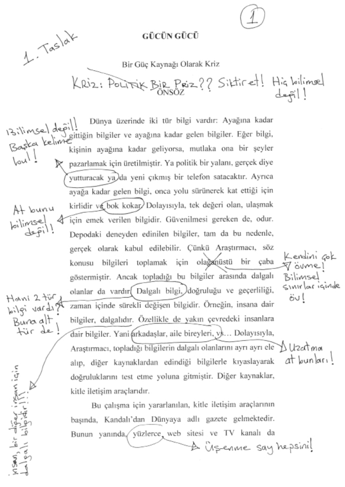
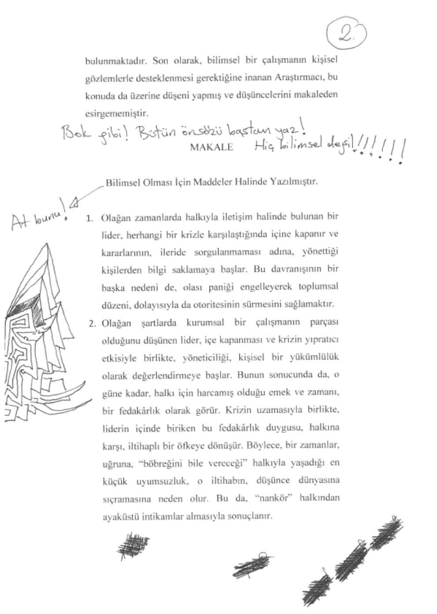
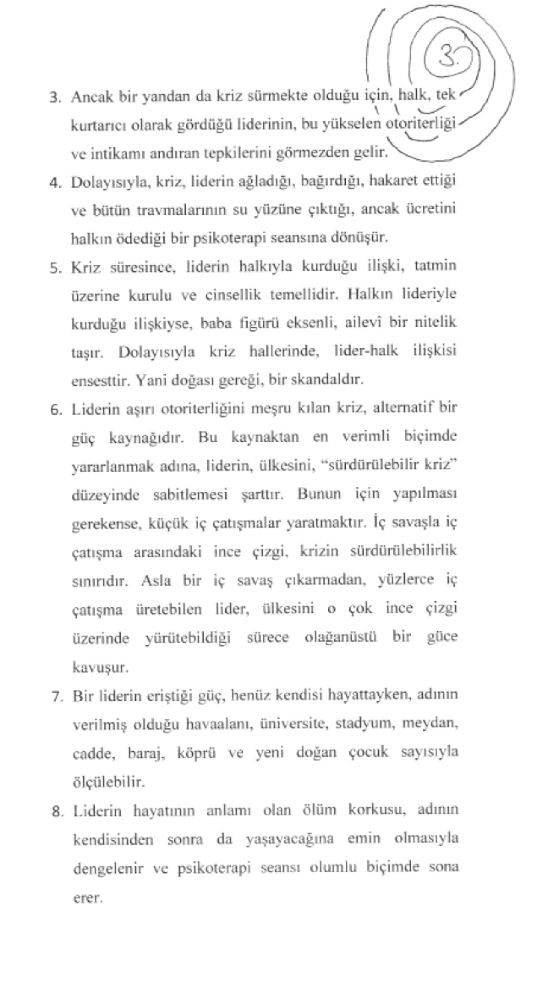
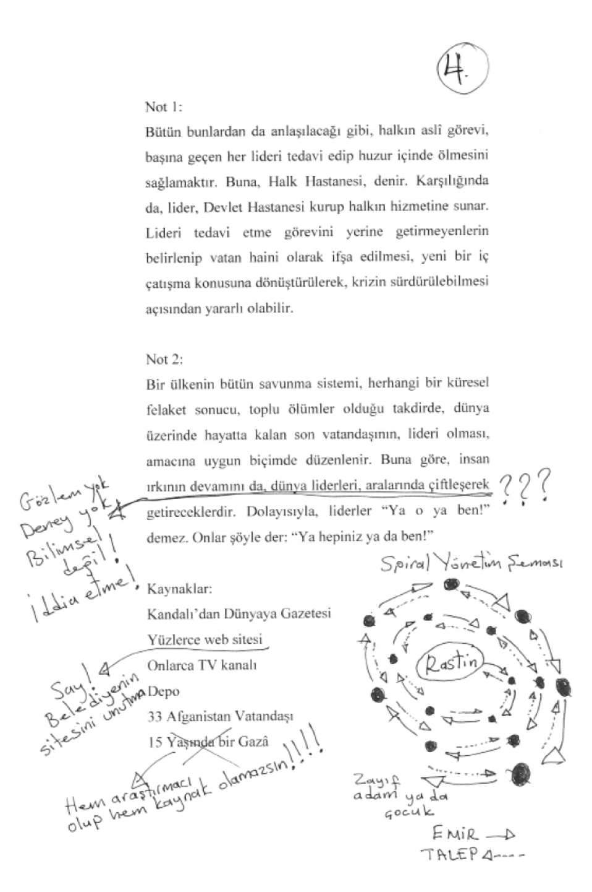

Depodaki üçüncü günlerinde, Rastin dengesini tamamen kaybetti ve sözde benim ağzımdan çıkan emirlerin şiddetini bir anda yükseltti. Tesadüfen seçtiği ve kameralardan birinin karşısına oturttuğu iki kişiden, birbirlerini tokatlamalarını istedi. Bir süre izledikten sonra, oyuna üçüncü birini dahil etti. Birkaç dakika sonra da 12 kişi daha ekledi. Böylece 15 kişilik bir halka oluştu ve soldan sağa, birbirlerini sırayla tokatlamaya başladılar...
Tabii ki aralarından böylesine aptalca bir şeyi yapmak istemeyenler çıktı, ancak Rastin’in uyarmasına gerek kalmadı. Her defasında, diğerleri, derhal müdahale edip, o isyankârların yerine istenilen hareketi yapmayı kabul eden birilerini koydular. Halkadan çıkarılanlar, bir anlamda, halktan da dışlanıyordu aslında. Üzerlerine düşen toplumsal görevi yerine getirmedikleri için kimse onlarla konuşmuyor ya da yemeğini paylaşmıyordu. Onlar da bir köşeye gidip öfke içinde oturuyor, ancak bir süre sonra, kendileri yerine tokatlanmaya başlamış olanların kızaran yanaklarını gördükçe daha fazla dayanamayıp eski yerlerini almak için yalvarmaya başlıyorlardı. Bu defa da, onların yerine tokat yemeye başlamış olanlar, konuyu bir fedakârlık yarışına çekip yerlerinden kalkmamakta ısrar ediyordu.
“Rastin!”
Tam da halkanın ortasında durmuş, yanaktan yanağa taşınan tokatları izliyordu ki adını duyduğu anda kafasını kaldırdı.
“Ne?”
“Bunu daha ne kadar yapacaksın?”
“Ne zaman gidiyor biz?”
“Bilmiyorum, daha haber gelmedi...”
Aslında sormayacaktım ama sordum:
“Rastin, bu insanlar için bir fedakârlık yapıyorsun diye, onları cezalandırman mı gerekiyor?”
Hiç beklemeden yanıt vermedi. Sormamı bekliyormuş gibi.
“Hayır. Ben böbrek veriyor. Kendim için. Onlar için. Gitmek için. Problem yok. Ben onlara bunu yapıyor. Çünkü ben evden ayrılıyor. Onlar yüzünden. Anladı? Ben Afganistan gidiyor. Afganlar yüzünden. Afganlar, bunlar. Ev, cehennem. Ben, Kâbil, hep bunlar için mücadele. Savaş! Bunlar için! Ama boşuna! Nasıl der, kalabalık? People? Afganistan, insan, kalabalık?”
“Halk mı?”
“Evet, ben hep halk için mücadele. Ama ne zaman ben hapis, halk yok! Çok arkadaş öldü. Hapis. Sordun, neden İstanbul Üniversite olmadı. Çünkü ben hapis! Anladı? Hep halk için! Bunlar için! Ama ne zaman ihtiyaç var, halk yok! Üzülme, bu küçük ceza onlar için. Ben arkadaşlar öldü. Anladı?”
Galiba anlıyordum. Yine de anlamadığım bir nokta vardı.
“Ama arkadaşlarını öldürüp seni hapse atanlar bu insanlar değil herhalde, değil mi?”
“Daha kötü!” dedi Rastin. “Bunlar sustular!”
O arada, halkadan biri tokat atmakta tereddüt etti ve bunu gören Rastin, yanına gidip eğilerek kulağının dibinde bağırdı. Havada kalmış olan o el de, ineceği yanağa kondu ve tokat zinciri, kaldığı yerden devam etti. Ben de, nasıl bir arı kovanına burnumu soktuğumu anlamış oldum. Sahip olduğu her şeyi halkı için vermeye hazır olan bir üniversite öğrencisini, ülkesinden kaçmasına neden olacak kadar çaresiz bırakma suçundan cezalandırılan insanları izledim. Rastin’le arkadaşları hapislere girip canlarını verirken, gündelik hayatlarını sürdürme ve olan biteni görmeyip duymama suçlarından cezalandırılan insanları izledim. Sonra da Rastin’i, tam olarak asla alamayacağı intikamıyla yalnız bırakıp masamdan kalktım. O intikamı asla alamayacaktı, çünkü kimse ona, “Git de bizim için hapse gir ya da geber!” dememişti. Rastin’in atladığı nokta da buydu. Kahramanlara, görevlerini, halk değil, kendileri verirdi. Dolayısıyla kahramanların halktan hesap sorma hakkı yoktu. Kahramanlar, cesur ve aptal insanlardı. Halksa korkak ve kurnazdı. Anlaşmaları mümkün değildi. Ancak Rastin, halktan hesap sormaya kalktığına göre, o kadar da aptal değildi. O, gerçek bir liderdi. Gerektiği kadar kahraman, gerektiği kadar halktan. Bu da onu, cesur ve kurnaz yapıyordu – ki en tehlikeli insan türü oydu.
Üçüncü günün akşamında Rastin, 32 kişiyi de deponun ağzından en uzak noktaya taşıyıp bana kapağı açtırdı ve içleri dolu kovaları uzatıp boşlarını aldı. Halkını, silahlı olduğuma inandırmıştı. Güya elimde bir tabanca vardı. Ama bu, hazırladığım sandviçleri alıp depodakilere dağıtmasına engel olmamıştı. Yemekleri tükendiği için, tam zamanında gelen sandviçleri öpüp alınlarına koydular. Son olarak da Rastin’den şöyle bir haber aldılar: Yukarıdaki deli çocuğu, babasının arkadaşlarıyla iletişime geçmesi için ikna etmişti! Bu da, yakında yola çıkacakları anlamına geliyordu. Ve bu haberle birlikte Rastin, deponun tek kelimeyle tanrısı oldu. Yaşlı adam, oğlu ve çevresindekiler, geçmişteki bütün anlaşmazlıkları unutmuş, Rastin’in en büyük destekçileri haline gelmişlerdi. Herkes ona tapıyordu. Hatta bir ara, diğerleri uyurken, tuvalet için yaptırdığım bölmede, genç kadınlardan birinin Rastin’in önünde diz çöktüğünü ve pantolonunu indirip ağzını açtığını gördüm. Ben kadına bakıyordum, Rastin de kameraya. Gülüyordu... Bir sonraki gün de, kafiledeki başka bir kadının dört aylık hamile olduğunu öğrendik. O da, doğacak olan çocuğu erkek olursa, adını Rastin koyacağını açıkladı. Peki, Rastin tanrıysa, ben ne oluyordum? Tanrının tanrısı diye bir rütbe var mıydı teolojide?
Bütün bu gelişmeler sonucunda, Rastin de değişiyordu. Sanki o ilk günlerdeki öfkesi kalmamıştı. Halkıyla kurduğu iletişim daha mekanik bir hale gelmiş ve beni kullanarak yaptığı işkenceler seyrekleşmişti. Sadece, bir sabah, her nedense, içlerinden birini kemerle kırbaçlattı. Belki de otoritesini hatırlatmak içindi. Gücün kimin elinde olduğunu hatırlatmak için. Gerçekten de depoda küçük bir ülke kurulmuştu artık. Yaşayan, hareket eden ve çalışan bir ülke. Rastin, halkına çeşitli ödevler veriyordu. Öncelikle depoyu temizletiyordu. Günde en az üç kez. Sonra spor yaptırıyordu. Her sabah ve her akşam. En çok terleyenin benden aldığı bir kova suyla yıkanmasına izin veriyordu. Sahip olduğu tek kitaptan yüksek sesle bölümler okuyor ve ortaya attığı konuları tartıştırıyordu. Her tartışmadan sonra küçük de olsa kavgalar çıkıyor ve Rastin bir kenara çekilip gülümseyerek izliyordu. Depo halkı muhtemelen önemsiz konular için birbirini yerken, Rastin bu defa başka bir kadını, tuvalete götürüp, diliyle neler yapması gerektiğini tarif ediyordu. Aslında yaptığı şey, şiddetin kaynağını değiştirmekti. Şiddet artık direkt olarak deli çocuktan değil, halkın kendisinden gelip halka gidiyordu. Bunun için de, Rastin, onları birbirine düşürmenin bir yolunu mutlaka buluyordu. Özellikle, ışık ve ısıyı kullanıyordu. Güya benim verdiğim bir emir doğrultusunda, “Ya floresanlar açık kalacak ya da vantilatörler!” deyip, seçimi onlara bırakıyor, sonra da aradan çekiliyordu. Böylece, bütün gece Kuran okumak isteyenlerle sıcaktan delirmek üzere olanlar birbirine giriyordu. Ancak asla Tacik ya da Peştun ayrımı yapmıyordu. Çünkü onlar arasında gelişebilecek olan bir kavganın, en iyi ihtimalle, bir ya da iki cinayetle sonlanabileceğini biliyordu. Dolayısıyla, etnik konulara girmiyor, ortak sorunlar üzerinde yoğunlaşıp, cepheleri oluşturan bireylerin her defasında değiştiği çatışmalar yaratıyordu. Örneğin, ışık ve ısı konusundaki uygulamayı yemek ve su için yapıyor, biri arttıkça diğerinin azalacağını, ancak tabii ki seçimin yine halkta olduğunu belirtiyordu. Böylece halk da, her şeyin kendisine sorulduğu duygusuna kapılıyor ve Rastin’den zerre kadar şüphe etmiyordu. Daha çok su ve daha çok yemek isteyenler olarak ikiye ayrılıp, sadece birbirleriyle uğraşıyorlardı. Aslında Rastin’in yaptığı tek şey, yönetimin sorgulanmasını engelleyen, sıradan bir tekniği uygulamaktı. Dışarıdaki hayatta da benzer bir teknikle milyarlarca insan yönetiliyordu. Onlara da sorular soruluyordu. Seçimler yapmaları isteniyor ve doldurmaları için anketler ya da formlar uzatılıyordu. “Şu an nerede olmak isterdin?” deniyordu. Ya da “Geçmiş hayatında kimdin?” Ya da “Şehrin en güzel kadını kim?” Ya da “Diyet mi normal mi?” ya da “Etiniz nasıl pişsin?” diye soruluyordu. Ancak tabii o milyarlarca insan da, depodakiler gibi farkına varamıyordu. Oysa “Nasıl pişsin?” diye sorulan o et, kendileriydi! “Sizi nasıl pişirelim?” diye soruluyordu o insanlara. Ama bu gerçeği göremedikleri için de, seçme yetkisini elde etmiş olmanın gururuyla arkalarına yaslanıp, “İyi pişsin!” diyorlardı. Tabii bazıları da “Kanlı olsun!” diyordu. Ve dedikleri gibi de oluyordu. Kanlı...
Ancak Rastin, bu tekniğin yanında, siyaset biliminde buluş sayılabilecek başka bir yöntemi de uygulamaya başlamıştı. Bir zamanlar en büyük düşmanı olan, yaşlı adamın oğlu, artık başyardımcısıydı. Rastin, benden aldığını söylediği emirleri onun kulağına fısıldıyor, o da kendi yardımcısına söylüyordu. Böylece emirler kulaktan kulağa ilerlerken, Rastin kimseyle doğrudan muhatap olmuyordu. Bu yolla da, depodaki hiyerarşi, piramidal değil, ancak spiral bir yapıya kavuşuyordu.
Öncelikle, merkezde Rastin vardı. Hemen sağında da başyardımcısı. Onun sağında da başyardımcının yardımcısı, sonra da onun yardımcısı oturuyor ve zincir bu şekilde ilerliyordu. Rastin’den başlayan ve genişleyerek dönen, dairesel bir çizgi üzerinde, emirler, kulaktan kulağa iletiliyordu. Spiralin en dıştaki halkasının ucunda bazen depodaki tek çocuk, bazen de, neredeyse o çocuk kadar zayıf, orta yaşlarda bir adam oluyordu... Kadınlar tabii ki spirale dahil değildi, çünkü onlar hiçbir şeye dahil değildi. Çocuğun çığlık şampiyonu annesi bile, koca bir hiçti. Ancak konu onları ilgilendirdiği takdirde, spiralin dıştaki ucundan çıkan emir, biraz ileride kümelenmiş olan kadınlara iletiliyordu.
Aslında, depo halkının demokratik bir seçimle başlamış olan politik macerasının, birkaç gün içinde bir diktatörlüğe dönüştüğü ortadaydı. Ancak bu, sıradan bir diktatörlüğün piramidal yönetim şemasının da ötesindeydi. Her birey, kendisinden daha güçlü olan tek kişiye bağlıydı. En üstteki yani merkezdeki de liderdi. Oturuş ve yaşayışları spiral biçiminde olduğu için yüz yüze bakıyor, ancak aralarındaki iletişimi sadece iki yanlarındaki, bir üst ve bir alt güç basamağında bulunanlarla kuruyorlardı. Oysa piramidal hiyerarşide, aynı düzeyde eşitlenmiş kişilerden oluşmuş güç sınıfları bulunurdu. Bazen bin kişilik, bazen de üç kişilik sınıflar. Ama spiral hiyerarşide, her birey ayrı bir sınıftı. Belki de bu yapıya başka bir ad vermek gerekiyordu. Ultra diktatörlük, gibi. Çünkü her birey, altındaki kişiye göre bir diktatördü. Çocuk ya da o zayıf adam hariç, herkes farklı düzeylerde bir diktatördü. Oysa hepsi de aynı spiralin yani çizginin bir parçasıydı. Dolayısıyla, aralarında herhangi bir hiyerarşi yokmuş gibi görünüyordu. Belki de Rastin, bu spiral oturuş düzenini bu yüzden sürdürüyordu. Çünkü böylece, halk, bir ultra diktatörlükte olduğunun farkına varmıyordu. Ne de olsa liderleriyle, neredeyse yüz yüze ve aynı düzlemdeydiler. Yani liderleri, halktan biri gibiydi! Ayrıca uzaktan bakıldığında, toplu biçimde oturan, birbirine son derece bağlı ve aralarında herhangi bir hiyerarşinin izine rastlanmayan bir grup gibi görünüyorlardı. Örneğin, Rastin benden bir tabure istemiş olsa, her şey farklı olurdu. Herkes yerdeyken, Rastin o taburede oturur ve aradaki otuz santimlik fark sayesinde diktatörlük, çıplak gözle görülür hale gelebilirdi. Ama onun yerine, Rastin, tamamen kendi buluşu olan spiral hiyerarşide ısrar etmiş ve kimse bilmese de, bu yepyeni yönetim şemasını, siyaset bilimine, en az haftada dört saat işlenebilecek bir ders olarak sokmuştu. Tabii ki her düzeneğin olduğu gibi, bunun da sakıncaları vardı. Örneğin, spiralin dış halkalarından gelen taleplerin içerikleri, merkeze ulaşana kadar bozuluyor ya da değişiyordu. Ya da merkezden çıkan bir emir, spiralin sonuna ulaştığında bambaşka bir hale bürünüyordu. Ama sonuçta, bir ultra diktatörlükten bahsediyorduk. Liderin emirleri ve halkın taleplerinde, kulaktan kulağa aktarım yüzünden böylesi sapmalar olması son derece doğal ve kabul edilebilirdi. Hatta babamla aramızdaki iletişim düzeyiyle karşılaştırıldığında depodaki bilgi alışverişi neredeyse telepatiydi! Bu arada, tabii ki Ahad da çoktan dönmüş ve gelir gelmez de sormuştu:
“Var mı bir yaramazlık?”
“Yok” demiştim. Ne diyebilirdim ki? Nasıl olsa anlamazdı. Ya da nasıl olsa, anlatamazdım...
Depo adındaki ülkenin on ikinci gününü kutladığımız o sabah, monitörümün karşısına geçtiğimde, kadınların, bir köşede toplanıp yüzlerini duvara dönmüş ve gözlerini kapatmış olduklarını gördüm. Neler olduğunu anlamam çok sürmedi. Çünkü deponun diğer bir köşesinde, genelde spiralin kuyrukluğunu üstlenen zayıf adam çırılçıplak bir halde, onlarca el ve ayak tarafından dövülmekteydi. Bütün bunlar öylesine hızlı oluyordu ki ne yapacağımı bilemedim. Rastin’e baktım. O sadece izliyordu. Her zamanki gibi. Birkaç defa “Dur artık!” diye bağırdım ama beni dinlemedi. Duymuyormuş gibiydi. Ama ben de malın eksilmesini istemiyordum. İzlemekte olduğum şey, insanların birbirini kırbaçladığı ya da tokatladığı ya da nefesleri kesilene kadar şınav çektikleri gösterilerden biri değildi. Adamı iki duvarla zeminin birleştiği köşeye sıkıştırmış ve tam da o noktaya gömmeye çalışıyormuş gibi tekmeliyorlardı. Hemen bir yolunu bulup bunu durdurmalıydım. İlk aklıma gelen, deponun elektriğini kesmek oldu. Ve Rastin ancak o zaman kendine gelip “Tamam Gazâ!” diye bağırdı. “Bitti!”
Elektriği yeniden açtığımda, zayıf adamı, yerde, kendi kanının ortasında nefes almaya çalışırken gördüm ve Rastin’e “Bunu neden yaptın?” diye bağırdım. Ama o sakindi.
“Ben değil!” dedi ve çevresindekileri gösterdi. “Onlar yaptı!”
“Sen bir şey demeden onlar hiçbir şey yapmaz!”
Önce başını yavaşça birkaç kez salladı, sonra “Yaparlar” dedi. “Yaparlar...”
Sonra da, biraz önceki o uçuşan tekme ve yumrukların sahiplerine, her nefes alışında titreyen adamı doğrultup üzerindeki kanları temizlemeleri için emir verdi. Onlar da, kırılmış bir makineyi toplayıp kaldırıyorlarmış gibi ağır ağır, emri yerine getirdiler.
“Anlat!” diye bağırdım Rastin’e. “Ne oldu?”
Önce “Hiç” dedi, sonra da anlattı o hiçi... Her şey, zayıf adamın, deponun kapağını bir dahaki açışımda, aradan sıyrılıp beni etkisiz hale getirebileceğini iddia etmesiyle başlamıştı. “Çocuğu hallederim, silahı elinden alırım, sonra da bu işkence biter!” demişti. Ancak diğerleri, böylesi bir hareketin çok riskli olduğunu, her şeyin Rastin’in kontrolünde ilerlediğini, yakında birilerinin gelip kendilerini alacağını ve yola devam edeceklerini söylemişti. Bunun üzerine de zayıf adam, onları korkaklıkla suçlamıştı. Bir ultra diktatörlükte asla yapılmaması gereken bir şeyi yapıp, halkı korkaklıkla suçlayınca da hak ettiği cezayı görmüştü!
Söyleyebileceğim pek bir şey yoktu. Sadece baktım. İnsanları izledim. Giydirip bir çuval gibi kenara bıraktıkları adamı, yüzlerini dönüp gözlerini açınca, gördükleri karşısında asla şaşırmayan kadınları, deponun merkezine oturan Rastin’i ve etrafında oluşan spirali izledim. Sonra yine o zayıf adama baktım. Galiba o da bana baktı. Ya da hayal görüyordum. Çünkü artık gerçeğe daha fazla bakmak istemiyordum. Depo ülkesi hakkında yazmakta olduğum makalenin çıktısını alıp bilgisayarı kapadım. Ekran karardı ve ultra diktatörlük yerin dibinde kaldı...
Sonraki iki günü, elime bir kalem alıp, makale üzerinde düzeltmeler yaparak geçirdim. Belki de sırf hangara gitmemek için... Ama üçüncü gün, ister istemez, monitörü yeniden açtığımda, ilk gördüğüm, zayıf adamın hareketsiz bedeni oldu. Ceketiyle yüzünü örtmüşler ve görebilmem için, bir kameranın karşısına yatırmışlardı. Tam mikrofonu açıp “Uyuyor mu?” diye sormak üzere ilk heceyi ağzımdan çıkarmıştım ki, Rastin’in kırık gözlüklü yüzü önümdeki ekranın altıda birini kapladı ve konuştu:
“Ölü!”
Bir saniye için, “Emin misin?” diye sormak istedim. Bir saniye sonra da vazgeçtim. “Siktir!” demeyi düşündüm ama onu da demedim. Türkiye 43’üncüsü olduğumu söylemek ya da annemin beni doğar doğmaz gömmek istemiş olmasından bahsetmek istedim. Onlar da olmadı. Hatta bir ara, “Felat nerede?” diye sormak bile istedim. O hiç olmadı. Bütün bu olmayan şeylerin sonucunda da sessiz kaldım ve kalkıp depo kapağının yanına gittim. Dizlerimin üstüne çöktüm ve cebimdeki anahtarla kilidini açtım. Dünyanın en güzel kızı yerine depodan zayıf bir adam çıktı. Üstelik bu çıkışı, tam da diğerlerine tarif ettiği gibi oldu! Cesedini iki karış kadar araladığım kapağın altından sıyırarak çektim ve babamı çağırmaya gittim. Bira içiyordu.
“Ne var?” dedi.
Dünya üzerinde olup biten hiçbir şeyin gerçek adını bilmediğim için “Bir şey oldu” dedim. “Gel!”
Kalktı ve hangara doğru yürümeye başladı. Bir adım önümdeydi. Ben solundaydım ve sallanan sol eline bakıyordum. Bir zamanlar, kasabanın tek caddesinin kaldırımında bir oyun oynardım. Önümde yürüyen kadınlara bir adım kadar yaklaşıp, sallanan ellerini sikime çarptırmaya çalışırdım. Hiç de zor değildi. Hatta o kadar doğal bir çarpışma olurdu ki, özür dileyenler kadınlar olurdu. Ben de, o bir anlık temasın heyecanıyla, “Önemli değil!” deyip yürümeye devam ederdim. Bahçeden geçerken babamın eline çarptırmak istediğim şeyse, sağ elimdi. Belki de ellerimiz çarpışır ve birbirine tutunurdu. Hatta hangara el ele girerdik. Ben kim olursam olayım, ne olursam olayım, elimi bırakmaz ve öylece tutardı. Ama hiçbiri olmadı.
Hangara attığı ilk adımda, yüzünde mosmor dudaklarından başka hiçbir şeye yer kalmamış olan adamı gördü ve küfretti. Önce ayağının dibindeki, cesede sonra da bana! Ne de olsa, malı gözetleme görevi benimdi. Üstelik deponun her köşesine kameralar koyma fikri de benimdi! Demek ki tek suçlu bendim. O kadar masrafı boşuna yaptırmıştım! Birden aklıma Dordor geldi:
“Parası neyse, veririm!” dedim. Ve Ahad da, ancak o zaman sustu. Birkaç nefes alıp verdi ve başını kaşıdı. Belki de maaşımı ne kadar bir süre için kesmesi gerektiğini hesaplıyordu. Kaşıma sırası bir haftalık sakalını taşıyan boynuna gelmişti ki birden durdu. Hesabı bitmiş olmalıydı. Mart ayına girmiştik. Sesi bu yüzden soğuktu. Bir canavar olduğu için değil.
“Git, göm!” deyip çardak tarafını gösterdi.
Zayıf adamı gömmem iki saat sürdü. Bir saat çukuru açmak için, bir saat de kapamak için. Yıllar önce babam da Cuma’yı böyle gömmüştü. Hatta “Ya biri gelirse?” diye sormuştum da “Biz burada ölü değil, çukur gömüyoruz, korkma!” demişti. Meğer gerçekten de öyleymiş. İki saatlik bir işmiş, çukur kazıp kapamak. Çukur gömmek. Eğer konu ölü gömmek olsaydı, yani bir an için bile gömdüğümün bir insan olduğunu düşünseydim, herhalde asırlar sürerdi. Hele bir de benim yüzümden ölmüş bir insansa, toprağın altına girecek olan... Belki babam da, aynı nedenle o kadar sakin kalabilmişti, Cuma’yı gömerken. Doğrudan kendisi öldürmediği için. Ölümünün gerçek sorumlusu olduğu halde, öldüren kişi kendisi olmadığı için... Benim gibi. Zayıf adamı öldüren ben değildim. Her ne kadar ölümünden tamamen sorumlu olsam da, ne onu dövenlerden biriydim ne de dövülmesini sessizce izlemiştim. Rastin’i, yüksek lisans yapacağı İstanbul Üniversitesi yerine hapse gönderen her neyse, ben de oydum: Kader! Ben, kaderdim! O insanların hayat şartlarının toplamıydım. Ve o toplamın sonucu sıfırdı. Hepimizi içine alacak kadar büyük, dev bir sıfır! Satürn’ün kuşağı kadar büyük bir sıfır! Bu yüzden de o zayıf adamın sesini hayatının sonuna kadar duyacak olan ben değildim. Rastin’di! Onun da bir Cuma’sı olmuştu artık. Ne kadar ölürse o kadar dirilen ve dünyanın bütün ıssız adalarını Rastin’e dar edecek olan bir zayıf adam. Çünkü onu öldürene kadar dövenler sağırdı! Kulak zarları ve vicdanları çoktan delinmişti. Zayıf adamın sesi, bütün o sağır kulaklara çarpıp sekecek ve er ya da geç, Rastin’in zihnine giden yolu bulacaktı. Bütün bunları biliyordum, çünkü Cuma’yı nasıl öldürdüğümü hatırlıyordum. Sırf babama kızdığım için yatağımdan kalkmamış ve gidip de o havalandırmayı çalıştırmamıştım. Rastin’in de benden bir farkı yoktu. Sırf halkından nefret ettiği için, zayıf adamın öldüresiye dövülmesine müdahale etmemişti. Bütün halkını, tek bir hamlede kucaklayıp, dibi olmayan bir suçluluk kuyusuna atmak için. Ama Rastin yanılmıştı. Çünkü o depoda, kendisinden başka, kimsenin içinde suçluluk duygusuna yer yoktu. Eğer olsaydı, bir zamanlar, Rastin ve arkadaşları onlar için hapse girip canlarını verirken, sessiz kalmazlardı. Sese benzeyen bir şey çıkaramasalar bile, yine de ağızlarını açar ve kelepçeli bir Rastin’in sürüklendiği o sokaklara kusarlardı! En azından bunu yapabilirlerdi. Ama Afganistan’dan gelen bir toplu kusma eylemi haberi hatırlamıyordum. Demek ki zayıf adamın ölü sesi sadece Rastin’in peşinden gidecekti. Çünkü gidecek başka yeri yoktu. Sonuçta, hayaletler her şeyi biliyordu. Kimin etten bir duvar, kimin insan olduğunun farkındaydılar. Bu yüzden de bazılarının içinden geçip gidiyor, bazılarının da kulaklarına, bildikleri her şeyi fısıldıyorlardı.



